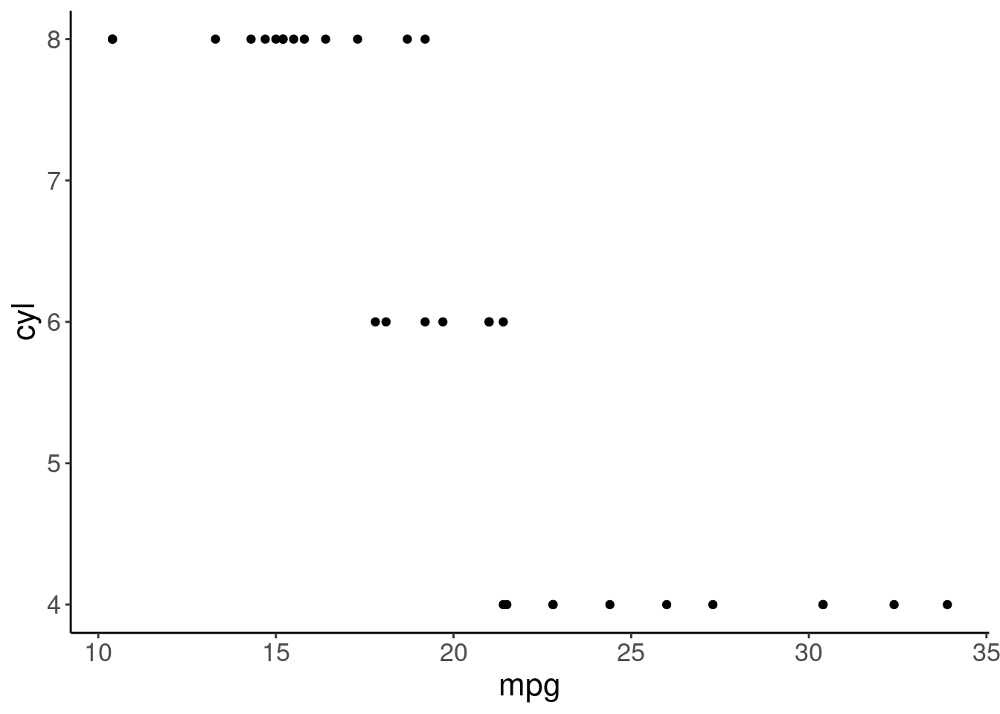
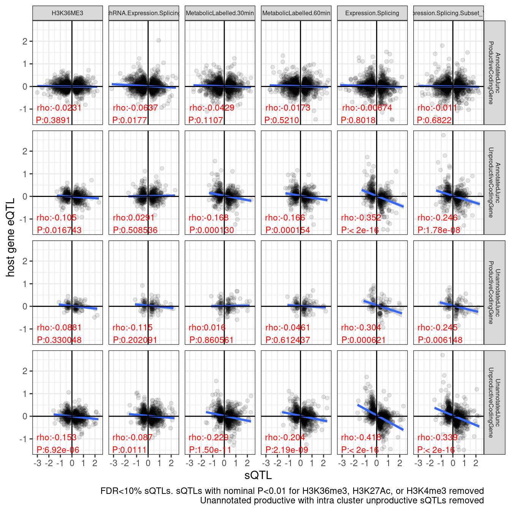

20230320_RemakeEffectSizeScatters_UpdatedAnnotations
2023-03-20
Last updated: 2023-03-23
Checks: 6 1
Knit directory:
ChromatinSplicingQTLs/analysis/
This reproducible R Markdown analysis was created with workflowr (version 1.7.0). The Checks tab describes the reproducibility checks that were applied when the results were created. The Past versions tab lists the development history.
The R Markdown is untracked by Git. To know which version of the R
Markdown file created these results, you’ll want to first commit it to
the Git repo. If you’re still working on the analysis, you can ignore
this warning. When you’re finished, you can run
wflow_publish to commit the R Markdown file and build the
HTML.
Great job! The global environment was empty. Objects defined in the global environment can affect the analysis in your R Markdown file in unknown ways. For reproduciblity it’s best to always run the code in an empty environment.
The command set.seed(20191126) was run prior to running
the code in the R Markdown file. Setting a seed ensures that any results
that rely on randomness, e.g. subsampling or permutations, are
reproducible.
Great job! Recording the operating system, R version, and package versions is critical for reproducibility.
Nice! There were no cached chunks for this analysis, so you can be confident that you successfully produced the results during this run.
Great job! Using relative paths to the files within your workflowr project makes it easier to run your code on other machines.
Great! You are using Git for version control. Tracking code development and connecting the code version to the results is critical for reproducibility.
The results in this page were generated with repository version ea58d89. See the Past versions tab to see a history of the changes made to the R Markdown and HTML files.
Note that you need to be careful to ensure that all relevant files for
the analysis have been committed to Git prior to generating the results
(you can use wflow_publish or
wflow_git_commit). workflowr only checks the R Markdown
file, but you know if there are other scripts or data files that it
depends on. Below is the status of the Git repository when the results
were generated:
Ignored files:
Ignored: .DS_Store
Ignored: .Rhistory
Ignored: .Rproj.user/
Ignored: analysis/.Rhistory
Ignored: code/.DS_Store
Ignored: code/.RData
Ignored: code/._report.html
Ignored: code/.ipynb_checkpoints/
Ignored: code/.snakemake/
Ignored: code/APA_Processing/
Ignored: code/Alignments/
Ignored: code/ChromHMM/
Ignored: code/ENCODE/
Ignored: code/ExpressionAnalysis/
Ignored: code/FastqFastp/
Ignored: code/FastqFastpSE/
Ignored: code/FastqSE/
Ignored: code/Genotypes/
Ignored: code/H3K36me3_CutAndTag.pdf
Ignored: code/IntronSlopes/
Ignored: code/LR.bed
Ignored: code/LR.seq.bed
Ignored: code/LongReads/
Ignored: code/Metaplots/
Ignored: code/Misc/
Ignored: code/MiscCountTables/
Ignored: code/Multiqc/
Ignored: code/Multiqc_chRNA/
Ignored: code/NonCodingRNA/
Ignored: code/NonCodingRNA_annotation/
Ignored: code/PairwisePi1Traits.P.all.txt.gz
Ignored: code/PeakCalling/
Ignored: code/Phenotypes/
Ignored: code/PlotGruberQTLs/
Ignored: code/PlotQTLs/
Ignored: code/ProCapAnalysis/
Ignored: code/QC/
Ignored: code/QTL_SNP_Enrichment/
Ignored: code/QTLs/
Ignored: code/RPKM_tables/
Ignored: code/ReadLengthMapExperiment/
Ignored: code/ReadLengthMapExperimentResults/
Ignored: code/ReadLengthMapExperimentSpliceCounts/
Ignored: code/ReferenceGenome/
Ignored: code/Rplots.pdf
Ignored: code/Session.vim
Ignored: code/SmallMolecule/
Ignored: code/SplicingAnalysis/
Ignored: code/TODO
Ignored: code/Tehranchi/
Ignored: code/bigwigs/
Ignored: code/bigwigs_FromNonWASPFilteredReads/
Ignored: code/config/.DS_Store
Ignored: code/config/._.DS_Store
Ignored: code/config/.ipynb_checkpoints/
Ignored: code/config/config.local.yaml
Ignored: code/dag.pdf
Ignored: code/dag.png
Ignored: code/dag.svg
Ignored: code/debug.ipynb
Ignored: code/debug_python.ipynb
Ignored: code/deepTools/
Ignored: code/featureCounts/
Ignored: code/featureCountsBasicGtf/
Ignored: code/gwas_summary_stats/
Ignored: code/hyprcoloc/
Ignored: code/igv_session.xml
Ignored: code/isoseqbams/
Ignored: code/log
Ignored: code/logs/
Ignored: code/notebooks/.ipynb_checkpoints/
Ignored: code/rules/.QTLTools.smk.swp
Ignored: code/rules/.ipynb_checkpoints/
Ignored: code/rules/OldRules/
Ignored: code/rules/notebooks/
Ignored: code/scratch/
Ignored: code/scripts/.ipynb_checkpoints/
Ignored: code/scripts/GTFtools_0.8.0/
Ignored: code/scripts/__pycache__/
Ignored: code/scripts/liftOverBedpe/liftOverBedpe.py
Ignored: code/snakemake.dryrun.log
Ignored: code/snakemake.log
Ignored: code/snakemake.sbatch.log
Ignored: code/snakemake_profiles/slurm/__pycache__/
Ignored: code/test.introns.bed
Ignored: code/test.introns2.bed
Ignored: code/test.log
Ignored: code/tracks.xml
Ignored: data/.DS_Store
Ignored: data/._.DS_Store
Ignored: data/._20220414203249_JASPAR2022_combined_matrices_25818_jaspar.txt
Ignored: data/GWAS_catalog_summary_stats_sources/._list_gwas_summary_statistics_6_Apr_2022-10.csv
Ignored: data/GWAS_catalog_summary_stats_sources/._list_gwas_summary_statistics_6_Apr_2022-11.csv
Ignored: data/GWAS_catalog_summary_stats_sources/._list_gwas_summary_statistics_6_Apr_2022-2.csv
Ignored: data/GWAS_catalog_summary_stats_sources/._list_gwas_summary_statistics_6_Apr_2022-3.csv
Ignored: data/GWAS_catalog_summary_stats_sources/._list_gwas_summary_statistics_6_Apr_2022-4.csv
Ignored: data/GWAS_catalog_summary_stats_sources/._list_gwas_summary_statistics_6_Apr_2022-5.csv
Ignored: data/GWAS_catalog_summary_stats_sources/._list_gwas_summary_statistics_6_Apr_2022-6.csv
Ignored: data/GWAS_catalog_summary_stats_sources/._list_gwas_summary_statistics_6_Apr_2022-7.csv
Ignored: data/GWAS_catalog_summary_stats_sources/._list_gwas_summary_statistics_6_Apr_2022-8.csv
Ignored: data/GWAS_catalog_summary_stats_sources/._list_gwas_summary_statistics_6_Apr_2022.csv
Ignored: data/Metaplots/.DS_Store
Untracked files:
Untracked: analysis/20230314_ProcessSM_ForInterpretableSplicingEffectSizes.Rmd
Untracked: analysis/20230320_RemakeEffectSizeScatters_UpdatedAnnotations.Rmd
Untracked: code/scripts/SmallMoleculeParseCassetteExons.py
Untracked: output/SmallMoleculeGAGT_CassetteExonclusters.bed
Unstaged changes:
Modified: code/rules/CalculatePi1.smk
Modified: code/rules/ProcessSmallMoleculeData.smk
Modified: code/scripts/FitSmallMoleculeModels.R
Modified: code/scripts/GenometracksByGenotype
Note that any generated files, e.g. HTML, png, CSS, etc., are not included in this status report because it is ok for generated content to have uncommitted changes.
There are no past versions. Publish this analysis with
wflow_publish() to start tracking its development.
knitr::opts_chunk$set(echo = TRUE, warning = F, message = F)
library(tidyverse)── Attaching packages ─────────────────────────────────────── tidyverse 1.3.1 ──✔ ggplot2 3.3.6 ✔ purrr 0.3.4
✔ tibble 3.1.7 ✔ dplyr 1.0.9
✔ tidyr 1.2.0 ✔ stringr 1.4.0
✔ readr 2.1.2 ✔ forcats 0.5.1── Conflicts ────────────────────────────────────────── tidyverse_conflicts() ──
✖ dplyr::filter() masks stats::filter()
✖ dplyr::lag() masks stats::lag()library(RColorBrewer)
library(data.table)
Attaching package: 'data.table'The following objects are masked from 'package:dplyr':
between, first, lastThe following object is masked from 'package:purrr':
transposelibrary(edgeR)Loading required package: limma# Set theme
theme_set(
theme_classic() +
theme(text=element_text(size=16, family="Helvetica")))
# I use layer a lot, to rotate long x-axis labels
Rotate_x_labels <- theme(axis.text.x = element_text(angle = 45, vjust = 1, hjust=1))
#test plot
ggplot(mtcars, aes(x=mpg, y=cyl)) +
geom_point()
# Annotation Colors
ColorKey <- c(
"AnnotatedJunc_ProductiveCodingGene" = "#1f78b4",
"UnannotatedJunc_ProductiveCodingGene" = "#a6cee3",
"AnnotatedJunc_UnproductiveCodingGene" = "#e31a1c",
"UnannotatedJunc_UnproductiveCodingGene" = "#fb9a99",
"AnnotatedJunc_NoncodingGene" = "#6a3d9a",
"UnannotatedJunc_NoncodingGene" = "#cab2d6")Intro
I previously made eQTL beta vs sQTL beta scatters, faceted by intron annotation to highlight the pervasiveness of eQTL predictable effects from sQTLs at non-productive junctions. Here I will remake such plots, similar to how I envision for publication, using Yang’s new intron annotations.
dat <- fread("../code/PairwisePi1Traits.P.all.txt.gz")
dat$PC1 %>% unique() [1] "Expression.Splicing" "Expression.Splicing.Subset_YRI"
[3] "chRNA.Expression.Splicing" "MetabolicLabelled.30min"
[5] "MetabolicLabelled.60min" "CTCF"
[7] "H3K27AC" "H3K4ME3"
[9] "H3K4ME1" "H3K36ME3"
[11] "ProCap" "polyA.Splicing"
[13] "polyA.Splicing.Subset_YRI" "chRNA.Splicing"
[15] "MetabolicLabelled.30min.Splicing" "MetabolicLabelled.60min.Splicing"
[17] "chRNA.Expression_ncRNA" "polyA.IER"
[19] "polyA.IER.Subset_YRI" "chRNA.IER"
[21] "MetabolicLabelled.30min.IER" "MetabolicLabelled.60min.IER"
[23] "chRNA.Slopes" "chRNA.Splicing.Order" PC1.PossibleValues <- c("polyA.Splicing", "polyA.Splicing.Subset_YRI", "chRNA.Splicing")
PC2.PossibleValues <-c("Expression.Splicing", "Expression.Splicing.Subset_YRI", "H3K4ME3", "H3K36ME3", "H3K27AC", "H3K4ME1", "MetabolicLabelled.30min", "MetabolicLabelled.60min", "chRNA.Expression.Splicing")
Intron.Annotations <- read_tsv("../data/IntronAnnotationsFromYang.tsv.gz") %>%
mutate(IntronName = paste(chrom, start, end, strand, sep=":"))
dat.sQTLs.eQTLs <- dat %>% filter(PC1 %in% PC1.PossibleValues & PC2 %in% PC2.PossibleValues) %>%
mutate(IntronName = str_replace(P1, "^(.+?:)clu_.+?([+-])$", "chr\\1\\2")) %>%
mutate(ClusterName = str_replace(P1, "^(.+?:).+?(clu_.+?[+-])$", "chr\\1\\2")) %>%
left_join(Intron.Annotations)
PC1.filter = c("polyA.Splicing")
PC2.filter = c("H3K36ME3", "chRNA.Expression.Splicing" , "MetabolicLabelled.30min", "MetabolicLabelled.60min", "Expression.Splicing", "Expression.Splicing.Subset_YRI")
PC2.SignificanceFilter <- c("H3K4ME3", "H3K27AC", "H3K36ME3")
dat.sQTLs.eQTLs$SuperAnnotation %>% unique()[1] "UnannotatedJunc_UnproductiveCodingGene"
[2] "AnnotatedJunc_ProductiveCodingGene"
[3] "AnnotatedJunc_UnproductiveCodingGene"
[4] "UnannotatedJunc_ProductiveCodingGene"
[5] "AnnotatedJunc_NoncodingGene"
[6] NA
[7] "UnannotatedJunc_NoncodingGene" dat.sQTLs.eQTLs %>%
filter(PC1 %in% PC1.filter) %>%
group_by(P1) %>%
filter(!any((PC2 %in% PC2.SignificanceFilter) & (trait.x.p.in.y < 0.01))) %>%
ungroup() %>%
filter(PC2 %in% PC2.filter) %>%
filter(SuperAnnotation %in% c("UnannotatedJunc_UnproductiveCodingGene", "AnnotatedJunc_ProductiveCodingGene", "AnnotatedJunc_UnproductiveCodingGene", "UnannotatedJunc_ProductiveCodingGene")) %>%
mutate(SuperAnnotation = str_replace_all(SuperAnnotation, "_", " ")) %>%
filter(GeneLocus == gene) %>%
filter(FDR.x < 0.1) %>%
group_by(P2, PC2, SuperAnnotation) %>%
sample_n(1) %>%
ungroup() %>%
mutate(PC2 = factor(PC2, levels=PC2.filter)) %>%
# mutate(PC2 = recode(PC2, !!!c("chRNA.Expression.Splicing"="chRNA" , "MetabolicLabelled.30min"="30min 4sU", "MetabolicLabelled.60min"="60min 4sU", "Expression.Splicing"="polyA", "Expression.Splicing.Subset_YRI"="polyA YRI"))) %>%
# mutate(PC2 = factor(PC2, levels=c("H3K36ME3","chRNA", "30min 4sU", "60min 4sU", "polyA", "polyA YRI"))) %>%
ggplot(aes(x=beta.x, y=trait.x.beta.in.y)) +
geom_point(alpha=0.1) +
# geom_smooth(method = "tls", se = FALSE, color = "red", method='bootstrap') +
geom_smooth(method='lm') +
geom_vline(xintercept=0) +
geom_hline(yintercept=0) +
geom_text(
data = . %>%
group_by(SuperAnnotation, PC2) %>%
summarise(cor=cor.test(beta.x,trait.x.beta.in.y, method="s")[["estimate"]], pval=cor.test(beta.x,trait.x.beta.in.y, method="s")[["p.value"]]) %>%
mutate(R = signif(cor, 3), P=format.pval(pval, 3)) %>%
mutate(label = str_glue("rho:{R}\nP:{P}")),
aes(x=-Inf, y=-Inf, label=label),
hjust=-.1, vjust=-0.1, color='red', size=3
) +
facet_grid(SuperAnnotation ~ PC2, labeller = label_wrap_gen(10)) +
theme_bw() +
theme(strip.text = element_text(size = 6)) +
labs(caption = "FDR<10% sQTLs. sQTLs with nominal P<0.01 for H3K36me3, H3K27Ac, or H3K4me3 removed", y="host gene eQTL", x="sQTL")ggsave("/project2/yangili1/carlos_and_ben_shared/rough_figs/OriginalSubplots/sQTL_eQTL_scatter_NewAnnotations_Temp.png")Hmm. I wonder why the unannoated stable juncs still seem unstable. maybe they are connected to unstable junctions. Let’s explore that.
Let’s plot the relative fraction of sQTL jucntion types within each cluster that is represented in each row.
ColorKey.Spaces <- setNames(ColorKey, str_replace_all(names(ColorKey), "_", " "))
sQTLs <- dat.sQTLs.eQTLs %>%
filter(PC1 %in% PC1.filter) %>%
group_by(P1) %>%
filter(!any((PC2 %in% PC2.SignificanceFilter) & (trait.x.p.in.y < 0.01))) %>%
ungroup() %>%
filter(PC2 %in% PC2.filter) %>%
filter(SuperAnnotation %in% c("UnannotatedJunc_UnproductiveCodingGene", "AnnotatedJunc_ProductiveCodingGene", "AnnotatedJunc_UnproductiveCodingGene", "UnannotatedJunc_ProductiveCodingGene")) %>%
mutate(SuperAnnotation = str_replace_all(SuperAnnotation, "_", " ")) %>%
mutate(SuperAnnotation = factor(SuperAnnotation, levels=names(ColorKey.Spaces))) %>%
distinct(IntronName, ClusterName, SuperAnnotation)
sQTLs %>%
count(ClusterName) %>%
ggplot(aes(x=n)) +
stat_ecdf() +
coord_cartesian(xlim=c(0,5)) +
labs("Num sQTLs per sQTLs cluster")sQTLs %>%
count(SuperAnnotation) %>%
ggplot(aes(x=SuperAnnotation, y=n)) +
geom_col() +
labs("Num sQTLs in each category") +
coord_flip()
left_join(sQTLs, sQTLs, by="ClusterName") %>%
filter(!IntronName.x == IntronName.y) %>%
count(SuperAnnotation.x, SuperAnnotation.y) %>%
ggplot(aes(x=SuperAnnotation.x, y=n, fill=SuperAnnotation.y)) +
geom_col(position="fill") +
scale_x_discrete(labels = function(x) str_wrap(x, width = 10)) +
# scale_fill_manual(values = ColorKey.Spaces) +
Rotate_x_labels +
labs(title = "Unannotated productive sQTLs are linked to unannotated unproductive", fill="Intra cluster annotations", y="Fraction intra cluster sQTLs", x="sQTL group", caption="removed self introns from intra-cluster")left_join(sQTLs, sQTLs, by="ClusterName") %>%
count(SuperAnnotation.x, SuperAnnotation.y) %>%
ggplot(aes(x=SuperAnnotation.x, y=n, fill=SuperAnnotation.y)) +
geom_col(position="fill") +
scale_x_discrete(labels = function(x) str_wrap(x, width = 10)) +
# scale_fill_manual(values = ColorKey.Spaces) +
Rotate_x_labels +
labs(title = "Unannotated productive sQTLs are linked to unannotated unproductive", fill="Intra cluster annotations", y="Fraction intra cluster sQTLs", x="sQTL group", caption="Included self introns in intra-cluster")left_join(sQTLs, sQTLs, by="ClusterName") %>%
count(SuperAnnotation.x, SuperAnnotation.y) %>%
filter(!SuperAnnotation.x == SuperAnnotation.y) %>%
ggplot(aes(x=SuperAnnotation.x, y=n, fill=SuperAnnotation.y)) +
geom_col(position="fill") +
scale_x_discrete(labels = function(x) str_wrap(x, width = 10)) +
# scale_fill_manual(values = ColorKey.Spaces) +
Rotate_x_labels +
labs(title = "Unannotated productive sQTLs are linked to unannotated unproductive", fill="Intra cluster annotations", y="Fraction intra cluster sQTLs", x="sQTL group", caption="Included self type introns excluded")Ok, so far it still seems plausible that the negative slope in unannotated productive juncs is just from linked unannotated unproductive juncs. Let’s try filtering out all unannotated productive juncs with any intra cluster unproductive junc sQTL, and see if the slope levels out.
dat.sQTLs.eQTLs %>%
filter(PC1 %in% PC1.filter) %>%
group_by(P1) %>%
filter(!any((PC2 %in% PC2.SignificanceFilter) & (trait.x.p.in.y < 0.01))) %>%
ungroup() %>%
filter(PC2 %in% PC2.filter) %>%
filter(SuperAnnotation %in% c("UnannotatedJunc_UnproductiveCodingGene", "AnnotatedJunc_ProductiveCodingGene", "AnnotatedJunc_UnproductiveCodingGene", "UnannotatedJunc_ProductiveCodingGene")) %>%
group_by(PC1, ClusterName) %>%
filter(!(SuperAnnotation == "UnannotatedJunc_ProductiveCodingGene" & any(SuperAnnotation %in% c("UnannotatedJunc_UnproductiveCodingGene", "AnnotatedJunc_UnproductiveCodingGene")))) %>%
ungroup() %>%
mutate(SuperAnnotation = str_replace_all(SuperAnnotation, "_", " ")) %>%
filter(GeneLocus == gene) %>%
filter(FDR.x < 0.1) %>%
group_by(P2, PC2, SuperAnnotation) %>%
sample_n(1) %>%
ungroup() %>%
mutate(PC2 = factor(PC2, levels=PC2.filter)) %>%
# mutate(PC2 = recode(PC2, !!!c("chRNA.Expression.Splicing"="chRNA" , "MetabolicLabelled.30min"="30min 4sU", "MetabolicLabelled.60min"="60min 4sU", "Expression.Splicing"="polyA", "Expression.Splicing.Subset_YRI"="polyA YRI"))) %>%
# mutate(PC2 = factor(PC2, levels=c("H3K36ME3","chRNA", "30min 4sU", "60min 4sU", "polyA", "polyA YRI"))) %>%
ggplot(aes(x=beta.x, y=trait.x.beta.in.y)) +
geom_point(alpha=0.1) +
# geom_smooth(method = "tls", se = FALSE, color = "red", method='bootstrap') +
geom_smooth(method='lm') +
geom_vline(xintercept=0) +
geom_hline(yintercept=0) +
geom_text(
data = . %>%
group_by(SuperAnnotation, PC2) %>%
summarise(cor=cor.test(beta.x,trait.x.beta.in.y, method="s")[["estimate"]], pval=cor.test(beta.x,trait.x.beta.in.y, method="s")[["p.value"]]) %>%
mutate(R = signif(cor, 3), P=format.pval(pval, 3)) %>%
mutate(label = str_glue("rho:{R}\nP:{P}")),
aes(x=-Inf, y=-Inf, label=label),
hjust=-.1, vjust=-0.1, color='red', size=3
) +
facet_grid(SuperAnnotation ~ PC2, labeller = label_wrap_gen(10)) +
theme_bw() +
theme(strip.text = element_text(size = 6)) +
labs(caption = "FDR<10% sQTLs. sQTLs with nominal P<0.01 for H3K36me3, H3K27Ac, or H3K4me3 removed\nUnannotated productive with intra cluster unproductive sQTLs removed", y="host gene eQTL", x="sQTL")# ggsave("/project2/yangili1/carlos_and_ben_shared/rough_figs/OriginalSubplots/sQTL_eQTL_scatter_NewAnnotations_Temp_RemovedSomeIntraClusterEffects.png")Hmm, i don’t think that was all that an improvement in showing less effect in the unannotated productive compared to annotatied unproductive and unannotated unproductive. Just to verify and code the basically same thing a different way, let’s filter for Unannotated productive sQTLs with only annotated productive clusters in the same cluster.
dat.sQTLs.eQTLs %>%
filter(PC1 %in% PC1.filter) %>%
group_by(P1) %>%
filter(!any((PC2 %in% PC2.SignificanceFilter) & (trait.x.p.in.y < 0.01))) %>%
ungroup() %>%
filter(PC2 %in% PC2.filter) %>%
filter(SuperAnnotation %in% c("UnannotatedJunc_UnproductiveCodingGene", "AnnotatedJunc_ProductiveCodingGene", "AnnotatedJunc_UnproductiveCodingGene", "UnannotatedJunc_ProductiveCodingGene")) %>%
group_by(PC1, ClusterName) %>%
filter((!SuperAnnotation == "UnannotatedJunc_ProductiveCodingGene") | (SuperAnnotation == "UnannotatedJunc_ProductiveCodingGene" & all(SuperAnnotation %in% c("AnnotatedJunc_ProductiveCodingGene", "UnannotatedJunc_ProductiveCodingGene")))) %>%
ungroup() %>%
mutate(SuperAnnotation = str_replace_all(SuperAnnotation, "_", " ")) %>%
filter(GeneLocus == gene) %>%
filter(FDR.x < 0.1) %>%
group_by(P2, PC2, SuperAnnotation) %>%
sample_n(1) %>%
ungroup() %>%
mutate(PC2 = factor(PC2, levels=PC2.filter)) %>%
# mutate(PC2 = recode(PC2, !!!c("chRNA.Expression.Splicing"="chRNA" , "MetabolicLabelled.30min"="30min 4sU", "MetabolicLabelled.60min"="60min 4sU", "Expression.Splicing"="polyA", "Expression.Splicing.Subset_YRI"="polyA YRI"))) %>%
# mutate(PC2 = factor(PC2, levels=c("H3K36ME3","chRNA", "30min 4sU", "60min 4sU", "polyA", "polyA YRI"))) %>%
ggplot(aes(x=beta.x, y=trait.x.beta.in.y)) +
geom_point(alpha=0.1) +
# geom_smooth(method = "tls", se = FALSE, color = "red", method='bootstrap') +
geom_smooth(method='lm') +
geom_vline(xintercept=0) +
geom_hline(yintercept=0) +
geom_text(
data = . %>%
group_by(SuperAnnotation, PC2) %>%
summarise(cor=cor.test(beta.x,trait.x.beta.in.y, method="s")[["estimate"]], pval=cor.test(beta.x,trait.x.beta.in.y, method="s")[["p.value"]]) %>%
mutate(R = signif(cor, 3), P=format.pval(pval, 3)) %>%
mutate(label = str_glue("rho:{R}\nP:{P}")),
aes(x=-Inf, y=-Inf, label=label),
hjust=-.1, vjust=-0.1, color='red', size=3
) +
facet_grid(SuperAnnotation ~ PC2, labeller = label_wrap_gen(10)) +
theme_bw() +
theme(strip.text = element_text(size = 6)) +
labs(caption = "FDR<10% sQTLs. sQTLs with nominal P<0.01 for H3K36me3, H3K27Ac, or H3K4me3 removed\nUnannotated productive with intra cluster unproductive sQTLs removed", y="host gene eQTL", x="sQTL")Ok, I guess that may be the best it is going to get in short time.. If I had more time I would consider doing something more fancy, like plotting each cluster only once and coming up with a cluster-level sQTL effect score, eQTL score, and annotation. But, I think what I am doing now is satisfactory… The only thing I am still not satisfied with is the random sampling. I can select a seed for consistent results, but from playing around with this I know different seeds change results a bit… see below…
set.seed(0)
dat.sQTLs.eQTLs %>%
filter(PC1 %in% PC1.filter) %>%
group_by(P1) %>%
filter(!any((PC2 %in% PC2.SignificanceFilter) & (trait.x.p.in.y < 0.01))) %>%
ungroup() %>%
filter(PC2 %in% PC2.filter) %>%
filter(SuperAnnotation %in% c("UnannotatedJunc_UnproductiveCodingGene", "AnnotatedJunc_ProductiveCodingGene", "AnnotatedJunc_UnproductiveCodingGene", "UnannotatedJunc_ProductiveCodingGene")) %>%
group_by(PC1, ClusterName) %>%
filter((!SuperAnnotation == "UnannotatedJunc_ProductiveCodingGene") | (SuperAnnotation == "UnannotatedJunc_ProductiveCodingGene" & all(SuperAnnotation %in% c("AnnotatedJunc_ProductiveCodingGene", "UnannotatedJunc_ProductiveCodingGene")))) %>%
ungroup() %>%
mutate(SuperAnnotation = str_replace_all(SuperAnnotation, "_", " ")) %>%
filter(GeneLocus == gene) %>%
filter(FDR.x < 0.1) %>%
group_by(P2, PC2, SuperAnnotation) %>%
sample_n(1) %>%
ungroup() %>%
mutate(PC2 = factor(PC2, levels=PC2.filter)) %>%
# mutate(PC2 = recode(PC2, !!!c("chRNA.Expression.Splicing"="chRNA" , "MetabolicLabelled.30min"="30min 4sU", "MetabolicLabelled.60min"="60min 4sU", "Expression.Splicing"="polyA", "Expression.Splicing.Subset_YRI"="polyA YRI"))) %>%
# mutate(PC2 = factor(PC2, levels=c("H3K36ME3","chRNA", "30min 4sU", "60min 4sU", "polyA", "polyA YRI"))) %>%
ggplot(aes(x=beta.x, y=trait.x.beta.in.y)) +
geom_point(alpha=0.1) +
# geom_smooth(method = "tls", se = FALSE, color = "red", method='bootstrap') +
geom_smooth(method='lm') +
geom_vline(xintercept=0) +
geom_hline(yintercept=0) +
geom_text(
data = . %>%
group_by(SuperAnnotation, PC2) %>%
summarise(cor=cor.test(beta.x,trait.x.beta.in.y, method="s")[["estimate"]], pval=cor.test(beta.x,trait.x.beta.in.y, method="s")[["p.value"]]) %>%
mutate(R = signif(cor, 3), P=format.pval(pval, 3)) %>%
mutate(label = str_glue("rho:{R}\nP:{P}")),
aes(x=-Inf, y=-Inf, label=label),
hjust=-.1, vjust=-0.1, color='red', size=3
) +
facet_grid(SuperAnnotation ~ PC2, labeller = label_wrap_gen(10)) +
theme_bw() +
theme(strip.text = element_text(size = 6)) +
labs(caption = "FDR<10% sQTLs. sQTLs with nominal P<0.01 for H3K36me3, H3K27Ac, or H3K4me3 removed\nUnannotated productive with intra cluster unproductive sQTLs removed", y="host gene eQTL", x="sQTL")set.seed(1)
dat.sQTLs.eQTLs %>%
filter(PC1 %in% PC1.filter) %>%
group_by(P1) %>%
filter(!any((PC2 %in% PC2.SignificanceFilter) & (trait.x.p.in.y < 0.01))) %>%
ungroup() %>%
filter(PC2 %in% PC2.filter) %>%
filter(SuperAnnotation %in% c("UnannotatedJunc_UnproductiveCodingGene", "AnnotatedJunc_ProductiveCodingGene", "AnnotatedJunc_UnproductiveCodingGene", "UnannotatedJunc_ProductiveCodingGene")) %>%
group_by(PC1, ClusterName) %>%
filter((!SuperAnnotation == "UnannotatedJunc_ProductiveCodingGene") | (SuperAnnotation == "UnannotatedJunc_ProductiveCodingGene" & all(SuperAnnotation %in% c("AnnotatedJunc_ProductiveCodingGene", "UnannotatedJunc_ProductiveCodingGene")))) %>%
ungroup() %>%
mutate(SuperAnnotation = str_replace_all(SuperAnnotation, "_", " ")) %>%
filter(GeneLocus == gene) %>%
filter(FDR.x < 0.1) %>%
group_by(P2, PC2, SuperAnnotation) %>%
sample_n(1) %>%
ungroup() %>%
mutate(PC2 = factor(PC2, levels=PC2.filter)) %>%
# mutate(PC2 = recode(PC2, !!!c("chRNA.Expression.Splicing"="chRNA" , "MetabolicLabelled.30min"="30min 4sU", "MetabolicLabelled.60min"="60min 4sU", "Expression.Splicing"="polyA", "Expression.Splicing.Subset_YRI"="polyA YRI"))) %>%
# mutate(PC2 = factor(PC2, levels=c("H3K36ME3","chRNA", "30min 4sU", "60min 4sU", "polyA", "polyA YRI"))) %>%
ggplot(aes(x=beta.x, y=trait.x.beta.in.y)) +
geom_point(alpha=0.1) +
# geom_smooth(method = "tls", se = FALSE, color = "red", method='bootstrap') +
geom_smooth(method='lm') +
geom_vline(xintercept=0) +
geom_hline(yintercept=0) +
geom_text(
data = . %>%
group_by(SuperAnnotation, PC2) %>%
summarise(cor=cor.test(beta.x,trait.x.beta.in.y, method="s")[["estimate"]], pval=cor.test(beta.x,trait.x.beta.in.y, method="s")[["p.value"]]) %>%
mutate(R = signif(cor, 3), P=format.pval(pval, 3)) %>%
mutate(label = str_glue("rho:{R}\nP:{P}")),
aes(x=-Inf, y=-Inf, label=label),
hjust=-.1, vjust=-0.1, color='red', size=3
) +
facet_grid(SuperAnnotation ~ PC2, labeller = label_wrap_gen(10)) +
theme_bw() +
theme(strip.text = element_text(size = 6)) +
labs(caption = "FDR<10% sQTLs. sQTLs with nominal P<0.01 for H3K36me3, H3K27Ac, or H3K4me3 removed\nUnannotated productive with intra cluster unproductive sQTLs removed", y="host gene eQTL", x="sQTL")
So maybe different solution is to just pick the strongest sQTL within each cluster.
dat.sQTLs.eQTLs %>%
filter(PC1 %in% PC1.filter) %>%
group_by(P1) %>%
filter(!any((PC2 %in% PC2.SignificanceFilter) & (trait.x.p.in.y < 0.01))) %>%
ungroup() %>%
filter(PC2 %in% PC2.filter) %>%
filter(SuperAnnotation %in% c("UnannotatedJunc_UnproductiveCodingGene", "AnnotatedJunc_ProductiveCodingGene", "AnnotatedJunc_UnproductiveCodingGene", "UnannotatedJunc_ProductiveCodingGene")) %>%
group_by(PC1, ClusterName) %>%
filter((!SuperAnnotation == "UnannotatedJunc_ProductiveCodingGene") | (SuperAnnotation == "UnannotatedJunc_ProductiveCodingGene" & all(SuperAnnotation %in% c("AnnotatedJunc_ProductiveCodingGene", "UnannotatedJunc_ProductiveCodingGene")))) %>%
filter(abs(beta.x) == max(abs(beta.x))) %>%
ungroup() %>%
mutate(SuperAnnotation = str_replace_all(SuperAnnotation, "_", " ")) %>%
filter(GeneLocus == gene) %>%
filter(FDR.x < 0.1) %>%
group_by(P2, PC2, SuperAnnotation) %>%
sample_n(1) %>%
ungroup() %>%
mutate(PC2 = factor(PC2, levels=PC2.filter)) %>%
# mutate(PC2 = recode(PC2, !!!c("chRNA.Expression.Splicing"="chRNA" , "MetabolicLabelled.30min"="30min 4sU", "MetabolicLabelled.60min"="60min 4sU", "Expression.Splicing"="polyA", "Expression.Splicing.Subset_YRI"="polyA YRI"))) %>%
# mutate(PC2 = factor(PC2, levels=c("H3K36ME3","chRNA", "30min 4sU", "60min 4sU", "polyA", "polyA YRI"))) %>%
ggplot(aes(x=beta.x, y=trait.x.beta.in.y)) +
geom_point(alpha=0.1) +
# geom_smooth(method = "tls", se = FALSE, color = "red", method='bootstrap') +
geom_smooth(method='lm') +
geom_vline(xintercept=0) +
geom_hline(yintercept=0) +
geom_text(
data = . %>%
group_by(SuperAnnotation, PC2) %>%
summarise(cor=cor.test(beta.x,trait.x.beta.in.y, method="s")[["estimate"]], pval=cor.test(beta.x,trait.x.beta.in.y, method="s")[["p.value"]]) %>%
mutate(R = signif(cor, 3), P=format.pval(pval, 3)) %>%
mutate(label = str_glue("rho:{R}\nP:{P}")),
aes(x=-Inf, y=-Inf, label=label),
hjust=-.1, vjust=-0.1, color='red', size=3
) +
facet_grid(SuperAnnotation ~ PC2, labeller = label_wrap_gen(10)) +
theme_bw() +
theme(strip.text = element_text(size = 6)) +
labs(caption = "FDR<10% sQTLs. sQTLs with nominal P<0.01 for H3K36me3, H3K27Ac, or H3K4me3 removed\nUnannotated productive with intra cluster unproductive sQTLs removed\nOnly top sQTL per cluster plotted", y="host gene eQTL", x="sQTL")dat.sQTLs.eQTLs %>%
filter(PC1 %in% PC1.filter) %>%
group_by(P1) %>%
filter(!any((PC2 %in% PC2.SignificanceFilter) & (trait.x.p.in.y < 0.01))) %>%
ungroup() %>%
filter(PC2 %in% PC2.filter) %>%
filter(SuperAnnotation %in% c("UnannotatedJunc_UnproductiveCodingGene", "AnnotatedJunc_ProductiveCodingGene", "AnnotatedJunc_UnproductiveCodingGene", "UnannotatedJunc_ProductiveCodingGene")) %>%
group_by(PC1, ClusterName) %>%
filter(abs(beta.x) == max(abs(beta.x))) %>%
ungroup() %>%
mutate(SuperAnnotation = str_replace_all(SuperAnnotation, "_", " ")) %>%
filter(GeneLocus == gene) %>%
filter(FDR.x < 0.1) %>%
group_by(P2, PC2, SuperAnnotation) %>%
sample_n(1) %>%
ungroup() %>%
mutate(PC2 = factor(PC2, levels=PC2.filter)) %>%
# mutate(PC2 = recode(PC2, !!!c("chRNA.Expression.Splicing"="chRNA" , "MetabolicLabelled.30min"="30min 4sU", "MetabolicLabelled.60min"="60min 4sU", "Expression.Splicing"="polyA", "Expression.Splicing.Subset_YRI"="polyA YRI"))) %>%
# mutate(PC2 = factor(PC2, levels=c("H3K36ME3","chRNA", "30min 4sU", "60min 4sU", "polyA", "polyA YRI"))) %>%
ggplot(aes(x=beta.x, y=trait.x.beta.in.y)) +
geom_point(alpha=0.1) +
# geom_smooth(method = "tls", se = FALSE, color = "red", method='bootstrap') +
geom_smooth(method='lm') +
geom_vline(xintercept=0) +
geom_hline(yintercept=0) +
geom_text(
data = . %>%
group_by(SuperAnnotation, PC2) %>%
summarise(cor=cor.test(beta.x,trait.x.beta.in.y, method="s")[["estimate"]], pval=cor.test(beta.x,trait.x.beta.in.y, method="s")[["p.value"]]) %>%
mutate(R = signif(cor, 3), P=format.pval(pval, 3)) %>%
mutate(label = str_glue("rho:{R}\nP:{P}")),
aes(x=-Inf, y=-Inf, label=label),
hjust=-.1, vjust=-0.1, color='red', size=3
) +
facet_grid(SuperAnnotation ~ PC2, labeller = label_wrap_gen(10)) +
theme_bw() +
theme(strip.text = element_text(size = 6)) +
labs(caption = "FDR<10% sQTLs. sQTLs with nominal P<0.01 for H3K36me3, H3K27Ac, or H3K4me3 removed\nOnly top sQTL per cluster plotted", y="host gene eQTL", x="sQTL")
sessionInfo()R version 4.2.0 (2022-04-22)
Platform: x86_64-pc-linux-gnu (64-bit)
Running under: CentOS Linux 7 (Core)
Matrix products: default
BLAS/LAPACK: /software/openblas-0.3.13-el7-x86_64/lib/libopenblas_haswellp-r0.3.13.so
locale:
[1] LC_CTYPE=en_US.UTF-8 LC_NUMERIC=C LC_TIME=C
[4] LC_COLLATE=C LC_MONETARY=C LC_MESSAGES=C
[7] LC_PAPER=C LC_NAME=C LC_ADDRESS=C
[10] LC_TELEPHONE=C LC_MEASUREMENT=C LC_IDENTIFICATION=C
attached base packages:
[1] stats graphics grDevices utils datasets methods base
other attached packages:
[1] edgeR_3.38.4 limma_3.52.4 data.table_1.14.2 RColorBrewer_1.1-3
[5] forcats_0.5.1 stringr_1.4.0 dplyr_1.0.9 purrr_0.3.4
[9] readr_2.1.2 tidyr_1.2.0 tibble_3.1.7 ggplot2_3.3.6
[13] tidyverse_1.3.1
loaded via a namespace (and not attached):
[1] httr_1.4.3 sass_0.4.1 splines_4.2.0 bit64_4.0.5
[5] vroom_1.5.7 jsonlite_1.8.0 R.utils_2.11.0 modelr_0.1.8
[9] bslib_0.3.1 assertthat_0.2.1 highr_0.9 cellranger_1.1.0
[13] yaml_2.3.5 pillar_1.7.0 backports_1.4.1 lattice_0.20-45
[17] glue_1.6.2 digest_0.6.29 promises_1.2.0.1 rvest_1.0.2
[21] colorspace_2.0-3 Matrix_1.5-3 htmltools_0.5.2 httpuv_1.6.5
[25] R.oo_1.24.0 pkgconfig_2.0.3 broom_0.8.0 haven_2.5.0
[29] scales_1.2.0 later_1.3.0 tzdb_0.3.0 git2r_0.30.1
[33] mgcv_1.8-40 generics_0.1.2 farver_2.1.0 ellipsis_0.3.2
[37] withr_2.5.0 cli_3.3.0 magrittr_2.0.3 crayon_1.5.1
[41] readxl_1.4.0 evaluate_0.15 R.methodsS3_1.8.1 fs_1.5.2
[45] fansi_1.0.3 nlme_3.1-157 xml2_1.3.3 tools_4.2.0
[49] hms_1.1.1 lifecycle_1.0.1 munsell_0.5.0 reprex_2.0.1
[53] locfit_1.5-9.7 compiler_4.2.0 jquerylib_0.1.4 rlang_1.0.2
[57] grid_4.2.0 rstudioapi_0.13 labeling_0.4.2 rmarkdown_2.14
[61] gtable_0.3.0 DBI_1.1.2 R6_2.5.1 lubridate_1.8.0
[65] knitr_1.39 bit_4.0.4 fastmap_1.1.0 utf8_1.2.2
[69] workflowr_1.7.0 rprojroot_2.0.3 stringi_1.7.6 parallel_4.2.0
[73] Rcpp_1.0.8.3 vctrs_0.4.1 dbplyr_2.1.1 tidyselect_1.1.2
[77] xfun_0.30